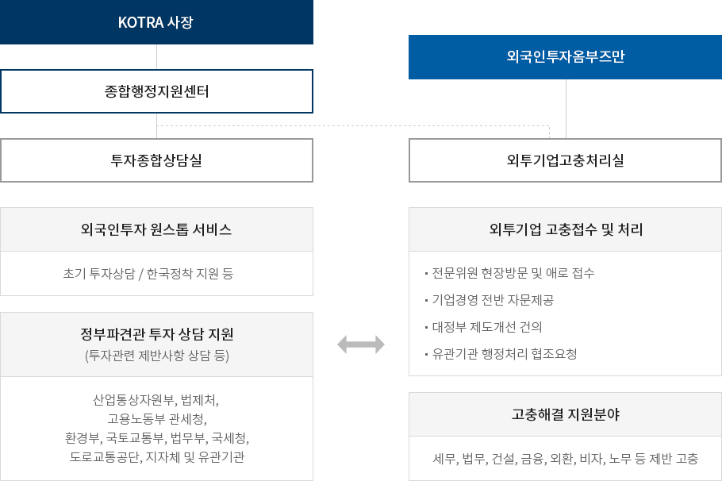

조직도
- 홈
- 기관소개
- 조직도
외국인투자 고충처리기구는 KOTRA 내 외국인투자옴부즈만 직속으로
투자종합상담실과의 유기적인 협조를 통하여 고충 해결을 효과적으로 지원합니다.
투자종합상담실과의 유기적인 협조를 통하여 고충 해결을 효과적으로 지원합니다.
조직구성

이미지 크게보기
- KOTRA 사장
- 종합행정지원센터
- 외투기업고충처리실
- 외투기업 고충접수 및 처리
-
- 전문위원 현장방문 및 애로 접수
- 기업경영 전반 자문제공
- 대정부 제도개선 건의
- 유관기관 행정처리 협조요청
- 고충해결 지원분야
- 세무, 법무, 건설, 금융, 외환, 비자, 노무 등제반 고충
- 외투기업고충처리실
-
투자종합상담실
- 외국인투자 원스톱 서비스
- 초기 투자상담 / 한국정착 지원 등
- 정부파견관 투자 상담 지원 (투자관련 제반사항 상담 등)
- 산업통상자원부, 법제처, 고용노동부 관세청, 환경부, 국토교통부, 법무부, 국세청,도로교통공단, 지자체 및 유관기관
- 외국인투자옴부즈만
- 외투기업고충처리실
- 외투기업 고충접수 및 처리
-
- 전문위원 현장방문 및 애로 접수
- 기업경영 전반 자문제공
- 대정부 제도개선 건의
- 유관기관 행정처리 협조요청
- 고충해결 지원분야
- 세무, 법무, 건설, 금융, 외환, 비자, 노무 등제반 고충